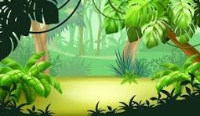

Bem-vindo ao AgroTeen!
Conheça a agricultura do Paraná de forma divertida e educativa.
Aproveite os seguintes jogos para aprender mais sobre a agricultura paranaense!
Nossos jogos
Descubra os jogos disponíveis para se divertir e conhecer mais sobre a agricultura do nosso estado!

Jogo 1
Descrição do jogo 1
Jogo 2
Descrição do jogo 2
Jogo 3
Descrição do jogo 3
Jogo 4
Descrição do jogo 4
Sobre o projeto
O AgroTeen é um projeto desenvolvido para promover a educação agrícola entre os jovens do Paraná. Nosso objetivo é tornar o aprendizado sobre agricultura divertido e acessível, utilizando jogos interativos e conteúdos educativos para despertar o interesse dos adolescentes pela agricultura e suas práticas sustentáveis.